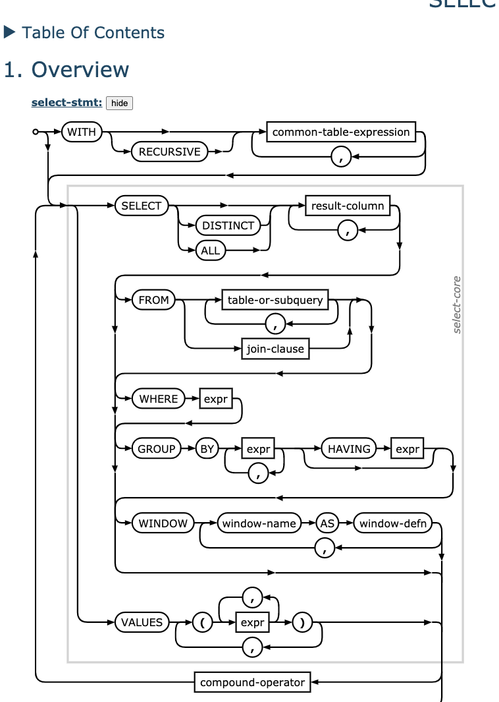

- 00 导读 入门Python的必备知识.md.html
- 00 开篇词 重复工作这么多，怎样才能提高工作效率？.md.html
- 01 拆分与合并：如何快速地批量处理内容相似的Excel？.md.html
- 02 善用Python扩展库：如何批量合并多个文档？.md.html
- 03 图片转文字：如何提高识别准确率？.md.html
- 04 函数与字典：如何实现多次替换.md.html
- 05 图像处理库：如何实现长图拼接？.md.html
- 06 jieba分词：如何基于感情色彩进行单词数量统计？.md.html
- 07 快速读写文件：如何实现跨文件的字数统计？.md.html
- 08 正则表达式：如何提高搜索内容的精确度？.md.html
- 09 扩展搜索：如何快速找到想要的文件？.md.html
- 10 按指定顺序给词语排序，提高查找效率.md.html
- 11 通过程序并行计算，避免CPU资源浪费.md.html
- 12 文本处理函数：三招解决数据对齐问题.md.html
- 13 Excel插件：如何扩展Excel的基本功能？.md.html
- 14 VBA脚本编程：如何扩展Excel，实现文件的批量打印？.md.html
- 15 PowerShell脚本：如何实现文件批量处理的自动化？.md.html
- 16 循环与文件目录管理：如何实现文件的批量重命名？.md.html
- 17 不同操作系统下，如何通过网络同步文件？.md.html
- 18 http库：如何批量下载在线内容，解放鼠标（上）？.md.html
- 19 http库：如何批量下载在线内容，解放鼠标（下）？.md.html
- 20 不同文件混在一起，怎么快速分类？.md.html
- 21 SQLite文本数据库：如何进行数据管理（上）？.md.html
- 22 SQLite文本数据库：如何进行数据管理（下）？.md.html
- 23 怎么用数据透视表更直观地展示汇报成果？.md.html
- 24 条形、饼状、柱状图最适合用在什么场景下？.md.html
- 25 图表库：想要生成动态图表，用Echarts就够了.md.html
- 26 快速提取图片中的色块，模仿一张大师的照片.md.html
- 27 zipfile压缩库：如何给数据压缩&加密备份？.md.html
- 28 Celery库：让计算机定时执行任务，解放人力.md.html
- 29 网络和邮件库：定时收发邮件，减少手动操作.md.html
- 30 怎么快速把任意文件格式转成PDF，并批量加水印？.md.html
- 春节特别放送1 实体水果店转线上销售的数据统计问题.md.html
- 春节特别放送2 用自顶至底的思路解决数据统计问题.md.html
- 春节特别放送3 揭晓项目作业的答案.md.html
- 结束语 和我一起成为10X效率职场人.md.html
- 捐赠
21 SQLite文本数据库：如何进行数据管理（上）？
你好，我是尹会生。
你在办公中，一定遇到过需要数据持久化的问题。数据持久化，简单来说，就是当你关闭程序的时候，数据依然可以完整地保存在电脑中。你可能会想到用文本文件、Excel来存储这些数据，文本呢，没有办法按列读写数据，Excel呢，支持的默认API无法进行复杂查询。所以我今天要给你介绍一个功能强大，但编写代码又简单的数据库SQLite。
你可以用SQLite存储结构化的数据，把程序的处理结果保存到电脑中，便于下次或使用新的程序对这些数据进行访问。
用SQLite存储结构化的数据，包括增删改查这些操作。所以今天这节课，我就教你怎么来使用函数封装SQL语句，实现数据的读取和写入，下一节课我们再来学习如何通过类实现复杂的SQL语句的封装，以及如何更新和删除数据。
在讲解这些之前，考虑到SQLite在持久化数据存储的重要性，我想要先给你介绍SQLite的优势。
使用SQLite代替文本和Excel有哪些优势
也许你对SQLite这个名字还很陌生，但其实你早就在手机、智能电视、机顶盒等电子设备中用到过它了，比如手机上的通讯录，就是使用SQLite存储联系人的。
SQLite中存储的内容是结构化数据，像是通讯录、企业ERP数据、财务数据等这些存储和排列很有规律的数据，就被称作结构化数据。类似Excel的格式一样，分为“行”和“列”。以存储通讯录为例，每一列会提前指定好哪一列存放姓名、哪那一列存放电话号码，而每一行就是一个联系人的姓名和电话的具体记录。
在自动化办公中，你可以把结构化数据存放到SQLite中，它的处理速度和文件体积上要比文本文件和Excel更有优势。它会比文本文件的处理速度更快，比Excel需要的空间更少。甚至有人将SQLite应用到了每天点击量在10万次的网站上，足见它的稳定和高效的处理效率。
SQLite和你听说过的大型数据库Oracle、MySQL数据库不同，它更多是面向办公场景和移动设备的，所以它有大型数据库的稳定、高效、支持SQL语言的特性，但是也要比大型数据库学习起来更加简单。
正是由于它拥有数据库的特性，所以从SQLite中查找数据要比从文本文件中更快。而且它的数据还满足数据库必需的“增删改查”，但不支持设置字体、字号，所以存储一条数据所使用的空间会比Excel更小。这些特性叠加起来就刚好形成了SQLite的特有优势：
- 数据查询速度快；
- 存放数据的空间占用少；
- 实现了一般数据库能够支持的（基于SQL语言的）增删改查。
总结来说，就是如果你需要存放结构化的数据，而且只关注数据读取的效率，不关注数据的样式，而且还需要编程语言来进行数据访问的话，使用SQLite要比文本文件、Excel更适合你的办公场景。
我为你介绍了SQLite这么多好处，那赶快带着你把它用起来吧。
为SQLite建立数据表
要想使用SQLite数据库，光有文件还不够，你还要为它建立数据表，类似你新建了一个Excel工作簿的文件，与此同时你还要建立一个工作表，把数据写在工作表上， 再将多张工作表放在工作簿上面。
因此，要想实现对数据库的操作，我也需要为SQLite创建一张工作表，接下来我就用一个创建手机通讯录数据表的脚本，为你演示一下我是如何为SQLite数据库创建它的“工作表”的。
SQLite建立数据表的一般流程
为了能够让你更具体地学习数据表是怎样创建和使用的，我先把创建数据表的代码写出来给你，对照代码我来为你讲解，SQLite建立数据表的流程。
import sqlite3
import pathlib
# 数据库文件的路径和文件名称
dir = pathlib.PurePath(__file__).parent
db = pathlib.PurePath(dir, "contents.db")
# 创建连接
conn = sqlite3.connect(db)
# 创建游标
cur = conn.cursor()
# 定义要执行的SQL语句
sql = '''CREATE TABLE address_book(
id INT PRIMARY KEY NOT NULL,
name TEXT NOT NULL,
phone INT NOT NULL
)'''
# 执行SQL
try:
cur.execute(sql)
print("创建成功")
except Exception as e:
print("创建失败")
print(f"失败原因是：{e}")
finally:
# 关闭游标
cur.close()
# 关闭连接
conn.close()
这段代码实现了连接SQLite数据库，并创建通讯录数据表的功能。要想使用SQLite数据库，你需要掌握四个步骤，我来带你依次学习。
第一步，连接数据库文件。
连接数据库文件有两种情况，数据库文件不存在和数据库文件已经存在。如果数据库文件不存在，那么第一次连接时就会建立一个空的数据库文件，你需要注意的是，创建时要确保Python程序对操作数据库文件的目录有写入权限，否则会因权限不足而创建失败。另一种情况，如果数据库文件已经存在，则会直接打开数据库文件，相应的数据库文件中已经建立的表和数据，也可以直接进行操作。
我在代码中演示的是数据库文件不存在的情况。为了便于你观察数据库是否被创建成功，我在代码中使用了之前学习过的“file”变量，将数据库文件contents.db和脚本放在了相同的目录。
第二步，创建游标。
游标，它的官方定义叫做操作行指针。它是第一次接触数据库的人，最难理解的概念，其实你可以想象一下，当你只能按行操作Excel时，你可以一次选中一行，也可以一次选中多行。而游标就是记录你当前选中的到底是哪一行。
在计算机中记录当前选中的行，是需要占用内存的，因此，你必须先声明一个游标对象，利用这一对象申请计算机内存来记录你当前的行数，用于后续对选中行继续操作。
创建游标的函数是cursor()，创建之后，一般会将它赋值给一个变量，后续操作可以利用变量来再次引用创建好的游标。
第三步，执行SQL语句。
SQL语句是和SQLite数据库“打交道”的主要形式，你需要通过SQL语句来操纵数据库。在上面的代码中，我就在代码的15行定义了一个创建表的SQL语句；在代码的第23行通过“excute()”函数运行该语句，运行之后就可以为SQLite创建表了。
第四步，关闭游标和连接。
当你完成对数据库的操作后，就需要手动关闭游标和连接，来正确退出数据库，这样可以避免在内存中数据还未来得及写入磁盘时，由于突然关闭进程导致数据丢失。
以上四个步骤是创建数据表的基本操作，也是SQLite乃至其他数据库使用SQL语句的通用步骤，你需要记住这种模式，这样你在使用Python来操作各种数据库时，保证数据的持久化。
我在代码中还使用了一个小技巧，叫做异常捕获。通过异常捕获你可以在程序运行过程出现问题时，及时对问题进行处理。
捕获异常就像是你在森里中捕猎，猎物就是森林中你无法预知什么时候会出现的小动物。而捕获它们的方法，就是在猎物必经之路上设置陷阱。如果没有出现猎物，一切照常；如果出现了猎物，就会被陷阱捕获到。
例如我在代码中设置的陷阱就是“try”语句块，当这一语句块中的“excute()”在执行时如果出错，那么它后面的语句不会再继续执行，而是直接转向except语句。并且你会得到你的“猎物”–产生异常的原因“Exception”类。你可以像我一样将它重新命名为“e”，并输出到终端，帮你定位这一错误产生的原因。
相信你还记得我在讲操作SQLite四个必要步骤时提到的最后一个步骤，你不能因为出现错误，而“忘记”关闭游标和数据库，所以在“try”“except”语句中还有一个和它们配合使用的“finally”语句，它的作用是无论是否抛出异常，“finally”语句块下的代码都会被执行。
你看，增加了异常处理的数据库处理流程就要比原始的代码更加健壮。因此我建议你在进行数据库操作时，务必要为执行SQL语句的部分增加异常处理，因为它关系到你的数据是否能够安全的被保存到硬盘中。
建立数据表的SQL语句
在你了解了SQLite的一般流程之后，我再为你讲解一下建立数据表的SQL语句。
SQL语句，类似你使用“open()”函数打开文件之后，对文件内容执行的各种操作。根据不同的标准，它有不同的语法格式。SQLite能够支持的是大部分的SQL92标准（触发器和可写视图不被支持），因此，你可以使用符合SQL92标准的语句创建、删除表，并对数据进行增删改查的基本操作。
创建一张数据表，使用的SQL语句是“CREATE TABLE 表名称 （包括表的字段、字段类型和约束条件）。我还是以创建通讯录的表为例：
CREATE TABLE address_book(
id INT PRIMARY KEY NOT NULL,
name TEXT NOT NULL,
phone INT NOT NULL
)
这条语句的“address_book”是表名称，它有三个字段（也可以称作是三列数据），分别为id、name和phone。而每个字段都由字段名称、字段类型和可选的约束条件三部分组成。
- 字段名称，是用于操作表时方便进行列操作的名字。
- 字段类型，会限制你对该字段写入数据的类型，如果类型不正确会报错或被填入空值。SQLite能支持的类型非常多，我在示例中使用了最常见的整数和字符串，其他类型你可以通过官方文档来了解。
- 约束条件，是对该列强制执行的规则。例如我使用了“NOT NULL”约束，确保在数据写入时，该字段不能为空值。同时，我还使用了“PRIMARY KEY”，确保了字段唯一性，确保该字段的值不会重复。更多的约束条件，你同样可以根据官方文档来了解。
通过创建SQLite的数据表，我为你讲解了操作SQLite的基本流程中已经用到的SQL语句，以及如何使用异常捕获来使程序更加健壮，特别是像操作数据的程序，你要保证它在运行时出现的任何错误能在第一时间发现，这样才可以尽可能保证你的数据完整。
为了对数据实现操作，你还要在掌握创建表的基础上实现数据的增删改查，而其中的写入和查询是实际工作场景中对数据库最多的操作，接下来我就来带你学习一下写入和查询操作需要用到的SQL语句。
使用SQL实现对SQLite的写入和查询
对一个数据库的各种操作，查询一般会占到70%，而且大部分对数据的修改操作其实都隐含着查询。所以说查询是数据库中最重要的操作也不为过。
对SQLite数据库的表，实现写入和查询分别要使用“INSERT”和“SELECT” SQL语句，接下来我还是以通讯录的数据表为例，先为你插入通讯录汇总的联系人，然后通过查询的“SELECT”语句取出表中的联系人信息，通过这样的例子来给你演示一下怎么为SQLite数据库进行数据的写入和查询。
数据的写入
首先，我为通讯录添加一个联系人Tom，它的实现代码如下：
import sqlite3
import pathlib
# 数据库文件的路径和文件名称
dir = pathlib.PurePath(__file__).parent
db = pathlib.PurePath(dir, "contents.db")
# 创建连接
conn = sqlite3.connect(db)
# 创建游标
cur = conn.cursor()
# 定义要执行的SQL语句
sql1 = '''INSERT INTO address_book
VALUES (?, ?, ?)'''
v = (1, "Tom", 12377778888)
# 执行SQL
try:
cur.execute(sql1, v)
conn.commit()
except Exception as e:
print(f"失败原因是：{e}")
finally:
# 关闭游标
cur.close()
# 关闭连接
conn.close()
通过执行这段代码，你可以给通讯录增加一个用户“Tom”，以及他的电话号码“12377778888”。在这段数据写入的代码中，有两点需要你注意，分别是SQL语句和数据的拆分，以及写入后的提交功能。
SQL语句和数据的拆分，是指用于写入数据的SQL语句“INSERT”语句与真正要写入表中的数据需要保存在不同的变量中。当它们在真正执行SQL语句的那一刻，才会由excute ()函数进行合并。
写入两个变量的好处在于，数据往往是经过计算或用户输入得到的，而SQL语句是可以复用的，把数值脱离SQL语句可以更方便地在Python中进行处理。所以我也建议你在进行数据写入时，都采用这种拆分数据和SQL语句的方法，这样会比一条SQL语句中既包含INSERT语句，又包含数据，灵活性上要提高很多。
另一个需要注意的是在执行SQL语句写入表之后，需要使用commit()函数进行数据提交。这是SQLite的事务机制导致的，因为使用事务可以避免数据不一致的情况。
事务其实是个比较大的话题，也是一个比较系统的工程，要想把事务的细节讲清楚，那就能写一本书了。不过由于SQLite没有支持较为完整的事务以及办公自动化场景，所以今天这节课我就不展开为你讲解事务的概念了，这也并不影响你对今天这节课的理解。
数据的查询
在实现了数据写入之后，我们继续来看一下如何使用SQL实现数据的读取。从SQLite读取数据的代码如下：
import sqlite3
import pathlib
# 数据库文件的路径和文件名称
dir = pathlib.PurePath(__file__).parent
db = pathlib.PurePath(dir, "contents.db")
# 创建连接
conn = sqlite3.connect(db)
# 创建游标
cur = conn.cursor()
# 定义要执行的SQL语句
sql2 = '''SELECT phone FROM address_book WHERE name = "Tom" '''
# 执行SQL
try:
result = cur.execute(sql2)
print(result.fetchone())
except Exception as e:
print(f"失败原因是：{e}")
finally:
# 关闭游标
cur.close()
# 关闭连接
conn.close()
这段代码使用了“SELECT”SQL语句实现了联系人“Tom”的手机号码读取。“SELECT”语句执行后，会把结果放到“result”变量中。由于取出的结果是一个对象，因此还需要通过fetchone() 函数，把对象中的一行取出，得到用户的手机号码。
那在这一查找流程中，我们要重点关注的就是“SELECT”语句，它是实现读取内容的语句。在任何一个数据库中，它都是最常用的SQL语句。我们从它的结构开始分析。
SELECT phone FROM address_book WHERE name = "Tom"
这条语句的执行顺序和书写顺序是不同的，它的执行顺序是从“FROM”到“WHERE”，再到“SELECT”关键字。它们三个的含义分别是：
- FROM：从一张表中查找数据，用于来指定查询的表。
- WHERE：表示查询的条件是什么。在这个例子中，查询条件是name字段的值为“Tom”字符串。
- SELECT：显示哪一列。在这个例子中，只显示phone这一字段的值。
“SELECT”语句按照代码中的顺序实现了电话号码的查找。当然了，这只是个非常简单的查找，而你在工作中肯定会遇到更加复杂的查找，我也会在下一讲教你怎样使用Python来为更加复杂的查询编写高效的代码。如果你想要更加深入的学习SELECT语句，可以参考官方文档。
官方文档中会有“SELECT”中其他语句的执行顺序和功能介绍，并且还采用了流程图方式来为你介绍它的子句之间是如何进行组合的。如下图：

小结
最后让我来为你总结一下，在本讲中，我使用了SQLite数据库为你讲解了数据库对比文本文件和Excel的优势，它在存储结构化数据方面，已经作为了业界的标准解决方案。
想要用好SQLite，你还要掌握数据库的四个操作步骤，那就是：
- 连接数据库文件
- 创建游标
- 执行SQL语句
- 关闭游标和连接
这四个步骤是实现一切数据库操作的基础，在掌握四个操作步骤的基础上实现数据操作的SQL语句，包括增删改查四种操作，在本讲中我为你讲解了如何使用SQL实现SQLite的读写，下一讲将为你讲解更加复杂的SQL语句以及修改和删除的SQL语句。
查找和写入作为最常用的SQL语句，是需要你重点掌握的。除了存储通讯录数据，像是我们从网络批量下载的数据，以及工作中的员工信息表等数据都可以采用SQLite存放。它将是以后你存储结构化数据最实用的工具。
思考题
按照惯例，我为你出一道思考题，如果使用SELECT语句查询到的结果不止一条，使用fetchone()函数得到的是什么样的呢？你能否通过官方文档再找到获得多条查询结果的函数呢？
欢迎把你的想法和思考写在留言区，我们一起交流讨论。如果这节课在数据保存上帮你提高了办公效率，那也欢迎你把课程分享给你的朋友或同事，我们一起做职场上的效率人。
© 2019 - 2023 Liangliang Lee. Powered by gin and hexo-theme-book.